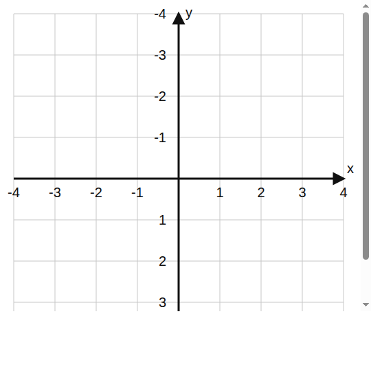

rārangi torotika
Te reo Māori terms
whārite
haukotinga y
whakakapi
Foundation
12 math tasks
- Draw $y=x+1$.

- Draw $y=x-2$.
- Draw $y=2x$.
- Draw $y=2x+1$.
- Draw $y=-x+3$.
- Draw $y=-x-1$.
- Draw $y=3x-2$.
- Draw $y=-2x+2$.
- Draw $y=\frac{1}{2}x+1$.
- Draw $y=\frac{1}{2}x-2$.
- Draw $y=-\frac{1}{2}x+2$.
- Draw $y=-\frac{1}{2}x-1$.
Proficient
12 math tasks
- Draw $y=3x+1$.
- Draw $y=-3x+2$.
- Draw $y=\frac{3}{2}x-1$.
- Draw $y=-\frac{3}{2}x+3$.
- Draw $y=4-x$.
- Draw $y=2-2x$.
- Draw $2y=x+4$.
- Draw $2y=-x+2$.
- Draw $3y=2x-3$.
- Draw $3y=-2x+6$.
- Draw $y-1=2x$.
- Draw $y+2=-x$.
Excellence
12 math tasks
- Draw $x+y=2$.
- Draw $2x+y=-1$.
- Draw $2y-3x=4$.
- Draw $3y+2x=6$.
- Draw $4y=2x-8$.
- Draw $4y=-2x+4$.
- Draw $y=\frac{5}{2}x-3$.
- Draw $y=-\frac{5}{2}x+4$.
- Draw $y-3=\frac{3}{2}(x-2)$.
- Draw $y+1=-\frac{3}{2}(x-1)$.
- Draw $2(y-1)=x+2$.
- Draw $2(y+2)=-x+4$.